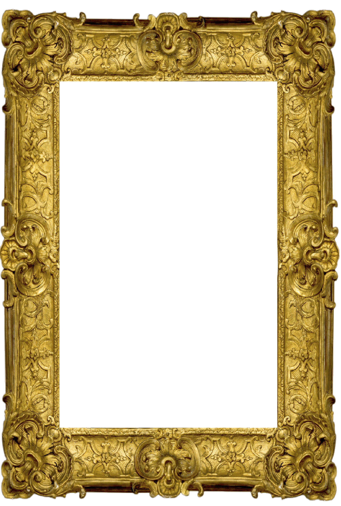

<ion-view view-title="Listen to your masterpiece!">
  <!--
  <ion-nav-buttons side="primary">
    <button class="button" ng-click="doSomething()">
      I'm a button on the primary of the navbar!
    </button>
  </ion-nav-buttons>
  -->
  <ion-content class="has-header" padding="true">
    <body>
      <div  ng-app="starter" ng-init="saveDrawing()" class ="frameImg"> <!--ng-init="saveDrawing()"-->
        
       <!-- 
       <!--  -->
      </div>
      <div class = "col-md 4 text-center" ng-app="starter" ng-init="convertToMusic()" >
        <button id="replay-button" class="button button-royal" ng-click="handleReplayButton()">
          <i ng-if="!musicPlayingControl" class="icon ion-play"></i>
          <i ng-if="musicPlayingControl" class="icon ion-pause"></i>
        </button>
        <button id="save-button" class="button button-royal" ng-click="promptNameForCreation();">Save</button>
        <button class="button button-royal" ng-click="checkStorage()">Check</button>
      </div>
    </body>

  </ion-content>
</ion-view>